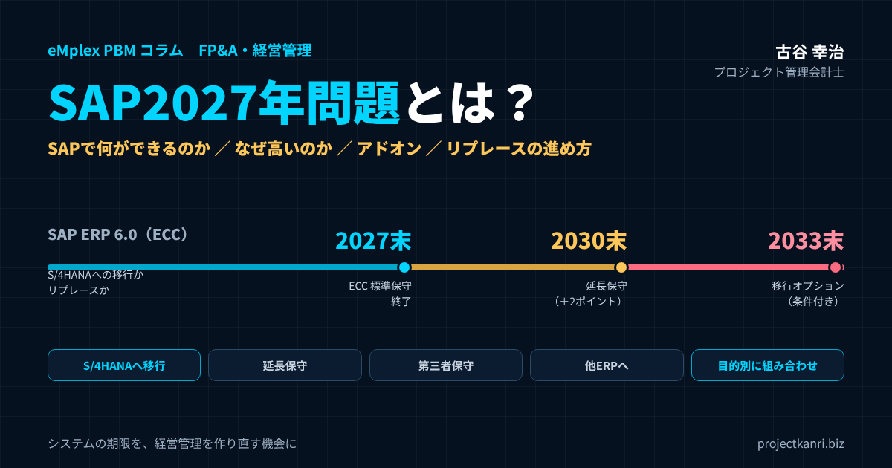

SAP2027年問題とは？SAPで何ができるのか、なぜSAPなのか、コストが高い理由とアドオン開発、世界で使われる理由、日本企業の導入事例から、2027年以降の選択肢とリプレースの進め方まで

結論：SAP2027年問題は「システムの期限」ではなく「経営管理を作り直す機会」
この記事の要点
- 2027年問題：SAP ERP 6.0（ECC）の標準保守が2027年末で終了。延長保守は2030年末まで（保守料＋2ポイント）
- 2033年：大規模顧客向けの移行オプション（RISE契約などの条件付き）。保守期限の延長ではない
- なぜSAPか：統合、ベストプラクティス、内部統制、グローバル対応
- なぜ高いか：導入の専門家の工数、アドオン、保守・運用、人材の希少性
- 鍵：アドオンの棚卸し、クリーンコアとFit to Standard、移行プロジェクトの予実管理
- 選択肢：S/4HANA移行、延長保守、第三者保守、他ERP、目的別システムの組み合わせ
プロジェクト管理会計士の古谷です。ここ数年、ご支援先の経営者や経理部長、情報システムの責任者の方から、SAPの2027年問題についてのご相談をいただく機会が増えています。「保守が切れると聞いたが、何をしなければならないのか」「S/4HANAに移行すべきなのか、別のシステムに替えるべきなのか」「見積を取ったら想像以上に高かった」。そうした声です。
SAP2027年問題とは、多くの大企業や中堅企業が基幹システムとして使っているSAP ERP 6.0、いわゆるECCの標準の保守が、2027年末で終了することに伴う問題です。保守が終わったシステムを使い続けると、法改正への対応や不具合の修正が受けられなくなるリスクがあります。そのため、多くの企業が、後継の製品であるSAP S/4HANAへの移行か、別のシステムへの刷新を迫られています。
本記事でお伝えしたい結論は、この問題を単なるシステムの入れ替えの期限として捉えるのではなく、自社の経営管理の仕組みを見直す機会として捉えるべきだ、ということです。長年の運用で積み重なったアドオンや、現場の慣習に合わせた業務の手順を、そのまま新しいシステムに移すのであれば、多額の費用をかけても経営は何も変わりません。何を標準に合わせ、何を自社の強みとして残すのか。その判断こそが、2027年問題の本質です。
そのために、まずSAPとは何か、なぜ選ばれてきたのか、なぜ高いのかを正しく理解するところから始めましょう。
SAPとは：世界の基幹システムを支えるERP
SAPは、ドイツに本社を置くソフトウェアの会社であり、同時にその会社が提供するERPの製品群の呼び名でもあります。1972年に創業し、企業の会計、販売、購買、生産、在庫、人事といった基幹の業務を一つのシステムで管理するERPの分野で、長く世界をリードしてきました。
ERPとは、Enterprise Resource Planningの略で、日本語では統合基幹業務システムと呼ばれます。会社のお金、もの、人の情報を、一つのデータベースで統合して管理するシステムです。販売の部門が受注を登録すれば、在庫が引き当てられ、出荷の指示が出て、売上と売掛金が会計に計上される。この一連の流れが、部門をまたいで自動でつながるのがERPの特徴です。
SAPの製品の中で、長く主力だったのがSAP ERP 6.0、通称ECCです。そして、その後継として2015年に登場したのが、SAP S/4HANAです。S/4HANAは、SAPが開発したインメモリのデータベースであるSAP HANAの上で動くことを前提に作り直された次世代のERPです。2027年問題とは、このECCからS/4HANAへの世代交代の期限の問題だと言い換えることができます。
SAPで何ができるのか：主な業務領域
SAPのERPは、企業の基幹の業務をほぼすべて網羅しています。従来のECCでは、業務の領域ごとにモジュールと呼ばれる単位で機能が提供されてきました。代表的なものを整理します。
| 略称 | 領域 | 主な機能 |
|---|---|---|
| FI | 財務会計 | 総勘定元帳、債権・債務、固定資産、決算 |
| CO | 管理会計 | 原価センター、利益センター、内部指図、収益性分析 |
| SD | 販売管理 | 見積、受注、出荷、請求 |
| MM | 購買・在庫管理 | 購買依頼、発注、入庫、請求書照合、在庫 |
| PP | 生産管理 | 生産計画、製造指図、所要量計画 |
| PS | プロジェクトシステム | WBS、プロジェクト予算・原価・収益、進捗 |
| HCM | 人事管理 | 人事、給与、勤怠（国・製品により提供形態が異なる） |
ECCでの代表的な区分です。S/4HANAでは機能が統合・再編されています。
中でも中核となるのが、財務会計と管理会計です。販売、購買、生産、在庫といった業務のモジュールで発生した取引は、すべて会計のモジュールに自動で連携され、仕訳として記録されます。会計の担当者が伝票を手で入力し直す必要がなく、業務の実態と会計の数字が常に一致するのが、統合されたERPの最大の価値です。
プロジェクト型のビジネスにとって関係が深いのが、プロジェクトシステムと呼ばれる領域です。プロジェクトをWBSと呼ばれる作業の階層に分解し、予算、原価、収益、進捗を管理することができます。建設、エンジニアリング、大規模なシステム開発など、受注型のビジネスを営む大企業で使われてきました。
S/4HANAでは、これらの機能が統合され、データの持ち方も簡素化されました。たとえば、財務会計と管理会計のデータは、ユニバーサルジャーナルと呼ばれる一つの明細のテーブルに統合され、会計の数字を、さまざまな切り口からリアルタイムに分析できるようになっています。
なぜSAPなのか：大企業がSAPを選んできた理由
ERPの製品は数多くありますが、とくに大企業やグローバルに事業を展開する企業の多くがSAPを選んできました。その理由は、大きく四つに整理できます。
| 理由 | 内容 |
|---|---|
| 統合 | 会計・販売・購買・生産・人事を一つのデータで管理 |
| ベストプラクティス | 世界の企業の業務の進め方を反映した標準機能 |
| 内部統制・監査 | 取引・承認の記録、細かな権限管理、監査法人の理解 |
| グローバル対応 | 多言語・多通貨・各国の法制度、グループ標準化 |
一つ目は、統合のレベルの高さです。会計から販売、購買、生産、人事までを一つのシステムで扱えるため、部門ごとに別々のシステムを持つ場合に比べて、データの整合性が保たれ、業務の流れも一貫します。
二つ目は、業務のベストプラクティスが組み込まれていることです。SAPの標準の機能は、世界中の多くの企業の業務の進め方を反映して作られています。自社の業務をSAPの標準に合わせることは、世界の標準的な業務の進め方を取り入れることでもあります。
三つ目は、内部統制と監査への対応です。誰が、いつ、どの取引を登録し、承認したのかの記録が残り、権限の管理も細かく設定できます。上場企業に求められる内部統制の仕組みを構築するうえで、SAPは長く信頼されてきました。監査法人にとっても、SAPの仕組みは理解されており、監査の手続きを進めやすいという面があります。
四つ目は、グローバルへの対応です。これは次の章で詳しく解説します。もちろん、これらの理由は大企業にとっての理由であり、中堅企業や、特定の業種に特化した業務を持つ企業にとって、SAPが常に最適というわけではありません。その点も後で触れます。
加えて、SAPのような大きなERPは、上場企業や大企業の取引先からの信頼の材料にもなってきました。会計の数字がどのような仕組みで作られているのかを説明しやすいことは、監査や外部への説明の場面で、目に見えない価値を持っています。
ワールドワイドで活用される理由
SAPが世界中の企業で使われている理由は、グローバルに事業を展開する企業の経営管理に必要な機能を、一つの製品で提供してきたことにあります。
| 観点 | グローバル企業にとっての価値 |
|---|---|
| 多言語・多通貨 | 世界の拠点で同じシステムを使える |
| 各国の会計・税制への対応 | 国ごとに別システムを持たずに済む |
| 勘定科目・業務手順の統一 | 本社が同じ物差しで拠点を比較できる |
| 連結決算 | グループの数字の集約が効率的 |
| 人材・パートナーの層 | どの国でも導入・運用の担い手を確保しやすい |
多くの国に子会社を持つ企業では、国ごとに言語、通貨、会計の基準、税制、商習慣が異なります。それぞれの国で別々のシステムを使っていると、本社が全世界の数字を集めるだけで大きな手間がかかり、数字の定義もばらばらになります。SAPは、多言語、多通貨、各国の法制度への対応を標準で備えており、世界中の拠点で同じシステム、同じ勘定科目、同じ業務の手順を使うことができます。
これにより、本社は世界中の拠点の数字を同じ物差しで比べることができ、連結の決算も効率的に行えます。グループ全体で業務の手順を標準化することで、ある国のやり方を別の国に展開することも容易になります。日本企業が海外に事業を広げる際に、グローバルの標準の基盤としてSAPを採用してきたのは、このためです。
もう一つの理由は、SAPを扱える人材とパートナーの層の厚さです。世界中に、SAPの導入を支援するコンサルティング会社やシステムインテグレーター、SAPの知識を持つ技術者がいます。どの国に進出しても、SAPを扱える人材を確保しやすいことは、グローバル企業にとって大きな安心材料です。
S/4HANAで何が変わるのか
2027年問題を正しく理解するには、ECCとS/4HANAの違いも押さえておく必要があります。S/4HANAは、ECCの単なる新しいバージョンではなく、データベースから作り直された別の製品と考えたほうが実態に近いものです。
| 観点 | ECC（SAP ERP 6.0） | S/4HANA |
|---|---|---|
| データベース | 複数のデータベースに対応 | SAP HANAのみ |
| 会計のデータ | 財務会計と管理会計で別のテーブル | ユニバーサルジャーナルに統合 |
| 得意先・仕入先 | 別々のマスタ | ビジネスパートナーに統一 |
| 操作画面 | 従来型の画面が中心 | Fioriが標準 |
| 集計・分析 | 夜間の一括処理が中心 | リアルタイムの集計・分析 |
最も大きな違いは、データベースです。ECCは、さまざまな会社のデータベースの上で動かすことができましたが、S/4HANAはSAP HANAの上でしか動きません。HANAは、データをメモリの上で処理するため、大量のデータの集計や分析を高速に行えます。これにより、従来は夜間の一括処理で作っていた集計を、必要なときにその場で行えるようになりました。
データの持ち方も簡素化されました。財務会計と管理会計の明細はユニバーサルジャーナルに統合され、得意先と仕入先の情報はビジネスパートナーという一つの仕組みに統一されました。画面も、Fioriと呼ばれる、ブラウザやタブレットで使いやすい操作画面が標準になっています。
こうした変更は、移行の作業にも影響します。得意先と仕入先のマスタをビジネスパートナーに変換する作業や、データベースの変更に伴うアドオンのプログラムの修正などが必要になります。ECCからS/4HANAへの移行が、単なるバージョンアップよりも大がかりになるのは、このためです。
SAPのコストが高い理由
SAPの導入や刷新の見積を見て、その金額の大きさに驚かれる経営者は少なくありません。SAPのコストが高くなる理由は、ソフトウェアのライセンスそのものよりも、導入と運用にかかる費用の構造にあります。
| 費用 | 内容 | 膨らむ要因 |
|---|---|---|
| ライセンス・利用料 | ソフトウェアの使用権、クラウドのサブスクリプション | 利用者数、利用する機能の範囲 |
| 導入費用 | 業務設計、設定、データ移行、テスト、教育 | 期間の長さ、要件の膨張 |
| アドオン開発 | 標準で対応できない業務の追加開発 | 現行業務の再現へのこだわり |
| 保守・運用 | 年間保守料、基盤運用、アドオン保守、問い合わせ対応 | アドオンの量、オンプレミスの基盤 |
| 人材 | SAP専門のコンサルタント・技術者 | 需要の集中による単価の上昇 |
第一に、導入の費用です。SAPの導入は、ソフトウェアを買ってくれば終わりではありません。自社の業務を分析し、SAPの標準の機能にどう当てはめるかを設計し、設定し、データを移し、テストをし、社員を教育する。この一連の作業を、SAPの専門知識を持つコンサルタントや技術者が担います。プロジェクトの期間は一年から数年に及ぶことも多く、その人件費が導入の費用の大きな部分を占めます。
第二に、アドオンの開発の費用です。SAPの標準の機能で対応できない業務がある場合、追加のプログラムを開発します。これがアドオンです。アドオンが多いほど、開発の費用だけでなく、テストの費用、そして将来のバージョンアップの費用も増えます。
第三に、保守と運用の費用です。オンプレミスでSAPを使う場合、ライセンスの価格に対して年率で一定の割合の保守料を支払い続けます。加えて、サーバーなどの基盤の運用、アドオンの保守、利用者の問い合わせへの対応など、社内外の運用の体制にも費用がかかります。クラウドのサブスクリプションで利用する場合は、ライセンスと基盤の運用を含めた利用料を毎年支払う形になります。
第四に、人材の希少性です。SAPの知識を持つコンサルタントや技術者は、世界的に需要が高く、その単価も高くなります。とくに2027年問題を控えて、多くの企業が同時期に移行のプロジェクトを進めているため、経験のある人材の確保が難しくなり、費用が上がる要因になっています。
こうした費用の構造を理解すると、SAPのコストを抑える鍵は、ライセンスの値引きの交渉よりも、アドオンを減らし、業務を標準に合わせ、プロジェクトの期間を短くすることにあると分かります。
費用の比較をするときは、導入の費用だけでなく、五年から十年程度の期間の総保有コストで比べることが大切です。導入の費用が安くても、アドオンの保守やバージョンアップの費用がかさめば、長期的には高くつきます。逆に、クラウドのサブスクリプションは毎年の費用が大きく見えても、基盤の更新や運用の人件費が不要になる分を考慮すると、総額では有利になることもあります。
アドオンでの開発：日本企業がはまりやすい落とし穴
日本企業のSAPの導入で、よく指摘されるのがアドオンの多さです。日本企業は、現場の業務の手順や帳票の形式、取引先ごとの細かな商習慣を大切にする傾向があり、それをSAPの上で再現するために、多くのアドオンを開発してきました。
アドオンそのものが悪いわけではありません。自社の競争力の源泉となっている独自の業務を、システムで支えるためのアドオンは、価値のある投資です。問題は、単に従来のやり方を変えたくないという理由で作られたアドオンが、大量に積み重なっていることです。
| 種類 | 例 | 扱い方 |
|---|---|---|
| 競争力の源泉を支えるアドオン | 独自の見積・原価計算、業界特有の取引 | 残す。中核の外側で拡張を検討 |
| 法制度・取引先の要請 | 業界固有の帳票、取引先指定の形式 | 標準機能や外部サービスで代替を検討 |
| 慣習の再現のためのアドオン | 旧システムと同じ画面・帳票 | 原則廃止し、業務を標準に合わせる |
| 使われていないアドオン | 過去の要件で作られ、今は不使用 | 廃止 |
アドオンが多いシステムには、いくつかの問題が生じます。まず、バージョンアップのたびに、すべてのアドオンが新しいバージョンで正しく動くかを確認し、必要に応じて修正しなければなりません。2027年問題でS/4HANAへの移行の費用が膨らむ最大の理由の一つは、このアドオンの対応です。次に、アドオンを作った担当者や開発会社しか中身を理解していない、いわゆるブラックボックス化が進みます。そして、アドオンの保守の費用が、毎年かかり続けます。
こうした反省から、SAPはS/4HANAの時代に、クリーンコアという考え方を打ち出しています。ERPの中核の部分には手を加えず、標準の機能のまま使い、どうしても必要な拡張は、SAPが提供するクラウドの開発基盤などを使って、中核の外側で行うという考え方です。中核をきれいに保つことで、バージョンアップを容易にし、常に最新の機能を使えるようにします。
同時に、業務をシステムの標準に合わせるFit to Standardという進め方も広がっています。自社の業務の要件を一つずつシステムで実現するのではなく、まずシステムの標準の業務の流れを前提にし、どうしても合わない部分だけを検討するという進め方です。後で紹介する日本企業の事例でも、この考え方が成果を上げています。
アドオンを減らすうえで、もう一つ大切なのは、帳票や画面の細部へのこだわりを見直すことです。従来の帳票と一字一句同じ形式を求めるのではなく、その帳票で何を確認したいのかに立ち返れば、標準の画面や分析の機能で十分に代替できることが多いのです。
日本企業の導入事例
日本でも、多くの企業がSAPを導入し、S/4HANAへの移行を進めています。公開されている事例の中から、アドオンの削減や業務の標準化に取り組んだものを紹介します。
| 企業 | 主な取り組み | 出典の時期 |
|---|---|---|
| 三洋化成工業 | ホスト系基幹システムをS/4HANAに刷新。Fit to Standardでアドオンを極力抑制、国内6社で稼働 | 2023年 |
| 東京化成工業 | 外部システムを約100から大幅削減、アドオンをほぼ使わない構成。物流関連の人件費・リソースを20〜30%程度削減 | 2021年（事例集） |
| トラスコ中山 | S/4HANAを含むデジタル基盤とチェンジマネジメント。見積回答の迅速化など | 2021年（事例集） |
各社の公表内容・導入パートナーの発表・SAPジャパンとJSUGの事例集の紹介に基づきます。
三洋化成工業は、20年以上運用してきたホストコンピューターをベースにした基幹システムのブラックボックス化が進んでいたことから、保守の契約の切れ目を機に刷新を決め、SAP S/4HANAを導入しました。導入を担当したNTTデータ グローバルソリューションズは、Fit to Standardをベースにプロジェクトを進め、アドオンの開発を極力抑えたとしています。構築は2023年4月に完了し、国内6社で稼働しています。
SAPジャパンと、日本のSAPユーザーの団体であるJSUGが2021年に共同で出版した事例集では、日本企業14社のS/4HANAを活用した変革の事例が紹介されています。その中で、研究用の試薬などを扱う東京化成工業は、外部のシステムを約100から大幅に削減し、インターフェースやアドオンをほぼ使わない構成にしたうえで、業務部門も業務の手順の検討に参加し、物流に関わる人件費やリソースを20から30%程度削減したと紹介されています。工具などを扱う専門商社のトラスコ中山は、S/4HANAを含むデジタルの基盤を導入し、自動化とあわせて社員の行動の変化を促すチェンジマネジメントに取り組み、見積の回答の迅速化などを実現したと紹介されています。
これらの事例に共通しているのは、システムの入れ替えを、業務の見直しと一体で進めていることです。アドオンを減らし、業務を標準に合わせ、現場の部門が主体的に参加する。システムの導入の成否を分けるのは、技術よりも、この業務と組織の変革への取り組みだと私は考えています。
公開されている事例は、成功した部分が中心に紹介されるものです。自社の検討に活かすときは、同じ業種や同じ規模の企業の事例を探し、可能であれば、導入した企業の担当者から直接話を聞くことをお勧めします。導入で苦労した点や、稼働した後に残った課題こそ、自社の計画に役立つ情報です。
SAP2027年問題とは：保守期限の全体像
ここで、SAP2027年問題の中身を、時系列で正確に整理しておきましょう。SAPは、ECCを含むSAP Business Suite 7の中核の製品について、もともと2025年までとしていた標準の保守、いわゆるメインストリームメンテナンスの期限を、2020年に2027年末まで延長しました。これが2027年問題の起点です。
| 時期 | 内容 | 条件・注意点 |
|---|---|---|
| 2020年 | 標準保守の期限を2025年から2027年末へ延長と発表 | — |
| 〜2027年末 | 標準保守（メインストリームメンテナンス） | Business Suite 7の中核製品が対象 |
| 2028年〜2030年末 | 延長保守（エクステンデッドメンテナンス） | 保守料の基準に＋2パーセンテージポイント |
| 2031年〜2033年末 | SAP ERP, private editionの移行オプション | 2030年末までにHANA上のprivate editionへ移行、RISEの契約、規模要件、別料金の支援プランなど |
2025年時点で公表されている内容に基づきます。最新の条件はSAPにご確認ください。
2027年末で標準の保守が終わった後も、2028年から2030年末までは、延長保守を選ぶことができます。ただし、延長保守には、保守料の基準に対して2パーセンテージポイントの上乗せがかかります。延長保守は、あくまで移行のための時間を確保するためのものであり、恒久的な選択肢ではありません。
さらに、SAPは2025年1月に、SAP ERP, private editionの移行オプションと呼ばれる選択肢を発表しました。非常に大規模で複雑なシステムを持つ顧客を対象に、2031年から2033年末まで、クラウドのサブスクリプションの形でECCを使い続けられるというものです。ただし、2030年末までにSAP HANAの上のプライベートエディションに移ること、RISE with SAPと呼ばれるクラウドへの移行の契約を結ぶこと、一定の規模の要件や、別料金の支援のプランを組み合わせることなど、厳しい条件があります。SAP自身も、これは2027年や2030年の保守の期限の延長ではないとしています。
つまり、多くの企業にとって、2027年末が実質的な判断の期限であり、延長保守を使っても2030年末までには移行を終える必要がある、というのが現実的な理解です。移行のプロジェクトには一年から二年程度かかることが多いため、まだ方針が決まっていない企業は、早急に検討を始める必要があります。なお、保守の条件や移行のオプションの詳細は、SAPの発表や契約によって変わることがあるため、必ず最新の情報をSAPや導入のパートナーに確認してください。
2027年問題の影響を受けるのは、ERPの中核だけではありません。SAPの周辺で使っている製品や、SAPと連携している自社の周辺システム、SAPの上で動くアドオンのすべてが、移行の検討の対象になります。保守の期限を確認するときは、自社が使っているSAPの製品の一覧と、それぞれの保守の条件を、導入のパートナーと一緒に洗い出すところから始めてください。
2027年以降の選択肢：S/4HANAへの移行か、他のERPか
ECCを使っている企業が取りうる選択肢は、大きく五つに整理できます。
| 選択肢 | 長所 | 注意点 |
|---|---|---|
| S/4HANAへ移行 | SAPの最新機能、長期の保守 | 移行の費用・期間、アドオンの対応 |
| 延長保守で時間を確保 | 準備期間を確保できる | 保守料の上乗せ、2030年末の次の期限 |
| 第三者保守 | 費用を抑えて現行を継続 | 新機能・法改正対応が限定的。長期戦略には不向き |
| 他のERPへリプレース | 規模や業種に合った費用と機能 | データ移行・業務の再設計が必要 |
| 目的別システムの組み合わせ | 会計は軽く、管理は業務特化で柔軟に | システム間の連携とマスタの統一 |
最も一般的なのは、SAP S/4HANAへの移行です。S/4HANAにも、自社でサーバーを持つオンプレミス、SAPが運用するプライベートクラウド、複数の企業が同じ環境を共有するパブリッククラウドといった形態があり、カスタマイズの自由度と運用の負担、費用のバランスが異なります。SAPは、RISE with SAPというクラウドへの移行のパッケージを推進しています。
二つ目は、延長保守を使って時間を稼ぐことです。移行の準備が間に合わない企業にとっては現実的な選択肢ですが、保守料が上がり、2030年末という次の期限が来ます。延長した期間を、何のために使うのかを明確にしておく必要があります。
三つ目は、SAP以外の第三者の保守の会社に保守を切り替えることです。費用を抑えながら現行のシステムを使い続けることができますが、SAPからの新しい機能の提供や、法改正への対応は限られます。短期的なつなぎとしては検討の余地があるものの、長期的な戦略としては慎重な検討が必要です。
四つ目は、SAP以外のERPへのリプレースです。グローバルなERPの製品だけでなく、日本の中堅企業向けのERPや、特定の業種に特化したシステムもあります。SAPの機能を使いこなせていない企業や、事業の規模に比べてSAPの費用が重すぎる企業にとっては、合理的な選択肢になりえます。
五つ目は、会計などの中核はシンプルなERPやクラウドの会計システムに置き、販売、プロジェクト管理、経営管理などは業務に合った専門のシステムで組み合わせる、という構成です。すべてを一つのERPで賄う考え方から、目的に応じて最適なシステムを組み合わせる考え方への転換です。
S/4HANAの利用形態：オンプレミスとクラウド
S/4HANAへの移行を選ぶ場合も、どの形態で使うかによって、費用、運用の負担、カスタマイズの自由度が大きく変わります。
| 形態 | カスタマイズの自由度 | 運用の負担 | 向いているケース |
|---|---|---|---|
| パブリッククラウド | 低い（標準中心） | 小さい（SAPが更新） | 業務を標準に合わせる会社、子会社・新事業 |
| プライベートクラウド | 高い | 中（基盤はSAPが運用） | ECCからの移行、独自業務がある会社 |
| オンプレミス | 最も高い | 大きい（すべて自社） | 厳格な自社管理が必要な会社 |
パブリッククラウドは、複数の企業が同じ環境を共有し、SAPが定期的に機能を更新します。アドオンの自由度は低いものの、常に最新の機能を使え、運用の負担も小さくなります。業務を標準に合わせる覚悟のある企業や、子会社や新しい事業など、比較的シンプルな業務の単位に向いています。
プライベートクラウドは、自社専用の環境をSAPが運用する形態です。オンプレミスに近いカスタマイズの自由度を保ちながら、基盤の運用をSAPに任せることができます。RISE with SAPの中心となる形態で、ECCからの移行で選ばれることの多い選択肢です。
オンプレミスは、自社やデータセンターでサーバーを持つ形態です。自由度は最も高いものの、基盤の運用やバージョンアップの負担はすべて自社が負います。どの形態を選ぶかは、カスタマイズをどこまで必要とするのか、運用の体制をどこまで社内に持てるのかによって決まります。
リプレースの進め方：グリーンフィールドとブラウンフィールド
S/4HANAへ移行する場合、その進め方は大きく三つに分かれます。どれを選ぶかで、費用、期間、そして移行後の業務の姿が大きく変わります。
| 方法 | 内容 | 向いている会社 |
|---|---|---|
| グリーンフィールド | 新規に構築し、Fit to Standardで業務を見直す | アドオンが多く、業務を変えたい会社 |
| ブラウンフィールド | 既存システムを変換して移行 | 業務影響を抑え、早く移行したい会社 |
| 選択的データ移行 | 設計を見直しつつ、必要なデータ・設定を選んで移す | 組織再編、段階的な移行をしたい会社 |
グリーンフィールドは、新しいシステムを一から構築する方法です。過去のアドオンや業務の手順にとらわれず、Fit to Standardで業務を見直すことができます。業務を大きく変える機会になる一方で、業務の設計からやり直すため、期間と現場の負担は大きくなります。
ブラウンフィールドは、今のECCのシステムをそのままS/4HANAに変換する方法です。過去のデータや設定、アドオンを引き継ぐため、業務への影響を抑えながら、比較的短い期間で移行できます。ただし、過去のアドオンや非効率な業務の手順もそのまま引き継がれるため、移行した後も同じ課題が残ります。変換したうえで、段階的に業務を見直していく計画が必要です。
その中間が、選択的なデータの移行と呼ばれる方法です。新しいシステムの設計を見直しながら、必要な過去のデータや設定だけを選んで移します。会社の組織の再編や、一部の事業だけを先に移したい場合などに使われます。
どの方法がよいかは、今のシステムのアドオンの量と品質、業務を見直す意思と体制、期限までの時間、予算によって決まります。私がお勧めしているのは、まず今のアドオンの棚卸しをすることです。どのアドオンが実際に使われていて、どのアドオンが業務の競争力に関わっていて、どのアドオンが単なる慣習のためのものなのか。この棚卸しの結果が、進め方を選ぶ最も重要な判断材料になります。
2027年末から逆算したスケジュール
移行のプロジェクトは、構想から稼働まで、少なくとも一年半から二年程度を見込んでおくのが安全です。2027年末を一つの目標とするなら、今すぐ動き出す必要があります。
| 段階 | 期間の目安 | 主な作業 |
|---|---|---|
| 構想 | 3〜6か月 | 現行システム・アドオンの棚卸し、課題整理、目的の明確化 |
| 選定 | 3〜6か月 | 選択肢の比較、パートナー選定、予算確定 |
| 導入 | 12〜18か月 | 設計、構築、テスト、データ移行、教育 |
| 安定化 | 3〜6か月 | 稼働後の問題対応、定着、月次決算の安定 |
規模や方式により大きく異なります。
構想の段階では、現行のシステムとアドオンの棚卸し、業務の課題の整理、経営として何を実現したいのかの目的の明確化を行います。この段階を飛ばして、いきなり製品やパートナーの選定に入ると、目的のあいまいなまま見積の比較だけが進み、後で要件が膨らみます。
選定の段階では、選択肢の比較、パートナーの選定、予算の確定を行います。導入の段階では、設計、構築、テスト、データ移行、教育を進めます。そして、稼働の後も、数か月は安定化と定着のための期間が必要です。稼働の直後は、月次決算や請求の処理などで問題が起きやすいため、決算期の直前の稼働は避けるのが鉄則です。
延長保守を使えば2030年末まで時間がありますが、延長保守の期間は保守料が上がります。延長保守を前提にするとしても、構想の段階は早めに終えておくことをお勧めします。
ERPのリプレースは「巨大なプロジェクト」：予算と工数をどう管理するか
ERPのリプレースは、それ自体が会社にとって最大級のプロジェクトです。数億円から数十億円の予算、数十人から数百人の関係者、一年から数年の期間。そして、ERPの導入のプロジェクトは、予算の超過や期間の延長が起きやすいことでも知られています。
プロジェクト管理会計の視点から見ると、ERPのリプレースのプロジェクトこそ、予算と実績、着地の見込みの管理を徹底すべき対象です。
| 指標 | 見る理由 |
|---|---|
| 外部費用の予算・実績・着地見込み | コンサル・開発費の超過を早期に把握 |
| 社内工数の予算・実績 | 現場の負担と、見えない費用の把握 |
| 要件追加の件数と影響額 | 要件の膨張の抑制 |
| アドオンの本数 | クリーンコアの維持 |
| 工程ごとの進捗と未解決課題の件数 | 期間延長の兆候の把握 |
予算の超過の最大の原因は、要件の膨張です。プロジェクトが進むにつれて、各部門から、あれもこれもシステムで実現したいという要望が出てきます。一つひとつは小さな要望でも、積み重なるとアドオンが増え、テストの範囲が広がり、期間が延びます。要件の追加は、必ず費用と期間への影響を見積もったうえで、経営が判断する仕組みにしておく必要があります。
もう一つの原因は、社内の工数の見落としです。ERPの導入の費用として見積もられるのは、多くの場合、外部のコンサルタントや開発会社への支払いです。しかし実際には、業務の要件を整理し、テストを行い、データを整え、社員を教育するために、社内の各部門の担当者が膨大な時間を使います。この社内の工数を予算に含めず、管理もしないと、現場の通常の業務が回らなくなったり、プロジェクトの進み具合が見えなくなったりします。
私は、ERPのリプレースのプロジェクトでも、外部の費用と社内の工数の両方を予算化し、毎月、予算と実績、着地の見込みを経営会議で確認することをお勧めしています。工程ごとの進み具合、要件の追加の件数と影響額、未解決の課題の件数といった指標を、早い段階から追いかけることが、予算の超過を防ぐ最善の方法です。
体制づくり：ベンダー任せにしない
ERPのリプレースが失敗する大きな原因の一つが、導入のパートナーに任せきりにすることです。パートナーはシステムの専門家ですが、自社の業務の専門家ではありません。業務をどう変えるのか、何を標準に合わせるのかを決められるのは、自社だけです。
社内には、プロジェクトの全体を管理する事務局、いわゆるPMOを置き、プロジェクトの予算、進み具合、課題を一元的に管理します。各業務の部門からは、業務を熟知し、判断の権限を持つキーユーザーを選び、プロジェクトに参加させます。キーユーザーには、通常の業務の負担を軽くする配慮が必要です。プロジェクトへの参加が通常の業務の片手間になると、判断が遅れ、プロジェクト全体が遅れます。
そして、経営者自身がプロジェクトの責任者として関わることです。部門間で業務のやり方の意見が分かれたとき、最終的に判断できるのは経営者だけです。経営会議の議題として、毎月プロジェクトの状況を確認する仕組みを作っておきましょう。
データ移行とマスタの整備：見落とされがちな最大の作業
ERPのリプレースで、想定以上に時間と手間がかかるのがデータの移行です。取引先、品目、勘定科目、部門、プロジェクトといったマスタのデータと、未完了の取引や残高のデータを、新しいシステムに正しく移さなければなりません。
長年使ってきたシステムには、重複した取引先、使われていない品目、名称の揺れなど、整っていないデータが大量に残っていることがよくあります。これをそのまま移すと、新しいシステムでも同じ問題が続きます。移行の前に、データの持ち主である業務の部門が、データを点検し、整える作業が必要です。
過去の取引のデータをどこまで移すかも、重要な判断です。すべての履歴を移そうとすると、移行の作業と検証の負担が大きくなります。新しいシステムには、期首の残高と未完了の取引だけを移し、過去の履歴は参照用に別に保管する、という割り切りも検討に値します。データの移行は、何度かの予行演習を経て、本番に臨むのが基本です。
経理・経営管理の視点で見直すべきこと
ERPのリプレースは、経理と経営管理の仕組みを見直す絶好の機会です。システムを入れ替えるだけで終わらせず、次のような点を同時に見直しましょう。
| 見直す点 | 内容 |
|---|---|
| コード体系 | 勘定科目・部門・セグメント・プロジェクトのコードを整理 |
| 月次決算の手順 | 新システム前提で締めの手順を再設計し、早期化 |
| 管理会計の切り口 | 事業別・顧客別・プロジェクト別など経営が見たい数字を定義 |
| 役割分担 | 変化の大きい管理会計はERPの外側で柔軟に扱うことも検討 |
一つ目は、勘定科目と部門、セグメントのコードの体系です。長年の運用で、使われていない科目や、意味の重複した科目が増えていることがよくあります。新しいシステムに移る前に整理しておけば、移行の作業も軽くなり、移行後の分析もしやすくなります。
二つ目は、月次決算の手順です。新しいシステムの機能を前提に、締めの手順を見直せば、月次決算の早期化を同時に実現できます。三つ目は、管理会計の切り口です。経営が見たい数字は、事業別なのか、顧客別なのか、プロジェクト別なのか。その切り口をシステムの設計に組み込んでおかなければ、移行した後も、結局は表計算ソフトで集計し直すことになります。
とくに注意したいのが、管理会計の要件を、会計の中核のシステムにすべて詰め込もうとすることです。経営の管理の切り口は、事業の変化に応じて頻繁に変わります。そのたびにERPの設定やアドオンを変更していては、クリーンコアの考え方とも相いれません。変化の大きい管理会計の部分は、ERPの外側の仕組みで柔軟に扱い、ERPには確定した会計の数字を集約する、という役割の分担も検討に値します。
稼働した後に効果を出すために
ERPのリプレースは、稼働した日がゴールではありません。新しいシステムが稼働しても、社員が古いやり方を続けていたり、表計算ソフトでの集計が残っていたりすれば、投資の効果は得られません。
稼働の前に、移行によって何を実現するのかを、測れる指標で決めておきましょう。月次決算の日数、手作業の入力の件数、アドオンの本数、経営会議に数字が出るまでの日数などです。稼働した後、これらの指標を定期的に確認し、目標に届いていないものは原因を探って改善します。
また、稼働した後も、業務とシステムの改善を続ける体制を残すことが大切です。プロジェクトが終わると体制を解散してしまう会社は多いのですが、それでは稼働後に見つかった課題が放置されます。小さくてもよいので、業務の改善とシステムの改善を継続して担う役割を、社内に置いておきましょう。
プロジェクト型ビジネスとSAP：中堅企業にとっての現実解
建設、システム開発、コンサルティング、広告や映像の制作といったプロジェクト型のビジネスを営む企業にとって、SAPはどのような位置づけになるでしょうか。
大企業で、グローバルにプロジェクトを展開し、調達や生産とも一体で管理する必要がある企業にとっては、SAPのプロジェクトの機能は有力な選択肢です。WBSに分解した予算と原価の管理、収益の認識、購買や在庫との連携を、一つのシステムで実現できるからです。
一方で、中堅企業のプロジェクト型ビジネスでは、事情が異なることが多くあります。管理したいのは、案件ごとの受注、売上、外注費、社員の工数と労務費、粗利、そして着地の見込みです。製造業のような複雑な生産や在庫の管理は必要ありません。この場合、SAPの導入と運用の費用に見合う効果を得るのは簡単ではありません。
| 会社の状況 | 構成の例 |
|---|---|
| 大企業・グローバル・調達や生産と一体 | SAPなどのERPでプロジェクトまで一体管理 |
| 中堅企業・受注型・工数中心の原価 | 会計は規模に合ったERP／会計システム、プロジェクト管理は特化型の仕組みで、仕訳データで連携 |
| SAPを継続する大企業 | ERPの中核はクリーンに保ち、変化の大きい管理は外側で |
私がご支援の現場でお勧めしているのは、会社の規模と業務の複雑さに応じて、システムの構成を選ぶことです。会計の中核は、自社の規模に合ったERPや会計システムに置く。そのうえで、プロジェクトの予算と実績、工数、着地の見込みといった、プロジェクト型ビジネスの経営管理に欠かせない部分は、その業務に特化した仕組みで管理し、会計とは仕訳のデータで連携する。こうした構成であれば、導入の費用と期間を抑えながら、経営に必要な数字を早く、正確に得ることができます。
SAPを使い続ける大企業でも、この考え方は使えます。ERPの中核はクリーンに保ち、変化の大きいプロジェクトの管理や経営の管理の部分を外側の仕組みで扱うことは、まさにクリーンコアの考え方と一致するからです。
判断の目安として、私は、プロジェクトの管理に必要な情報のうち、どれだけが購買、在庫、生産といったERPの他の機能と密接に結びついているかを見ることをお勧めしています。結びつきが強ければERPの中で管理する価値が高く、結びつきが弱く、工数と外注費が原価の中心であれば、プロジェクトの管理を特化した仕組みで扱うほうが、費用と使いやすさの両面で合理的なことが多いのです。
SAP2027年問題への対応でよくある失敗と対策
最後に、2027年問題への対応で、私がご相談を受ける中でよく目にする失敗を整理しておきます。
| 失敗 | 起きること | 対策 |
|---|---|---|
| 情報システム部門だけで進める | 業務の見直しが進まない | 経営が目的を示し、業務部門が主体的に参加 |
| 現行の業務をそのまま再現 | アドオンが増え、費用と期間が膨らむ | アドオンの棚卸しとFit to Standard |
| 検討開始が遅い | パートナー・人材が確保できない | 延長保守を前提にせず早期に方針決定 |
| 外部費用だけで予算化 | 社内工数が見えず現場が疲弊 | 社内工数も予算化し予実管理 |
| 要件追加を現場判断で受ける | 予算超過・期間延長 | 影響額を見積もり経営が判断 |
| 管理会計を後回しにする | 移行後も表計算で集計し直す | 経営が見たい切り口を設計段階で定義 |
これらの失敗の多くは、2027年問題を情報システム部門だけの問題として扱っていることから生まれます。基幹システムの刷新は、業務、組織、経営管理のすべてに関わる経営の課題です。経営者自身が目的を語り、業務の部門が主体的に参加し、プロジェクトの予算と進み具合を経営が管理する。この体制を作ることが、2027年問題を乗り越える最も確実な道です。
経営者が今すぐ確認すべきこと
SAPを使っている企業の経営者の方に、まず確認していただきたいことを整理しました。
| 確認すること | なぜ必要か |
|---|---|
| 現行SAPの保守の契約と期限 | 残された時間の把握 |
| アドオンの本数と利用の状況 | 移行の費用と方式を左右する |
| 移行の目的（何を変えたいのか） | 選択肢と要件を絞る軸 |
| 社内の推進体制と責任者 | ベンダー任せを防ぐ |
| 移行の予算の考え方（外部費用＋社内工数） | 予算超過を防ぐ |
| 管理会計で見たい切り口 | 移行後に表計算に戻らないため |
これらの質問に、すぐに答えられないものが多いほど、検討の開始を急ぐ必要があります。とくに、現行のアドオンの本数と利用の状況、移行の目的の二つは、どの選択肢を取るにしても最初に明らかにすべきことです。
実務家として伝えたいこと：システムは経営の写し鏡
私は、朋友建設の財務部でキャリアを始め、エンプレックスでは取締役CFOとして経営管理とシステムの両面に関わり、ホリプロでは経営企画の責任者を務めてきました。独立してからは200社を超える会社の経営管理をご支援する中で、基幹システムの刷新の相談を受けることも少なくありません。
その中で感じているのは、システムは経営の写し鏡だということです。業務の手順があいまいな会社は、システムもアドオンだらけで複雑になります。経営が見たい数字が定まっていない会社は、システムを入れ替えても、結局は表計算ソフトで数字を作り続けます。逆に、業務の標準と経営の物差しが明確な会社は、どのシステムを選んでも、それを使いこなすことができます。
SAP2027年問題は、多くの企業にとって、望まずに迫られた投資かもしれません。しかし、これを機に、自社の業務と経営管理を見直すことができれば、その投資は、次の十年の経営の基盤への投資に変わります。期限に追われて現状のまま移すのか、期限を機に経営を作り直すのか。その違いは、移行が終わった後に、大きな差となって表れます。
期限は待ってくれませんが、慌てて決める必要もありません。目的を定め、現状を棚卸しし、選択肢を比べる。この順番さえ守れば、どの道を選んでも、後悔の少ない判断ができるはずです。
eMplex PBMとERPの役割分担
私たちが提供しているeMplex PBMは、プロジェクト型ビジネスの経営管理に特化したクラウドサービスです。ERPの置き換えではなく、プロジェクトの予算、実績、着地見込みを管理し、会計とつなぐ役割を担います。
eMplex PBMでは、業種別のテンプレートで、売上、労務費、外注費、直接経費の予算をプロジェクトごとに作り、フォーキャストレポートで着地見込みと粗利率のアラートを確認できます。タイムシートの工数は労務費の原価に連携し、事業別・プロジェクト別の収支レポートで、本記事で触れた管理会計の切り口を扱うことができます。
月次の締めでは、仮締めと本締めの二段階のロックで数字を確定させ、財務会計の仕訳データをCSVで出力して、会計システムに連携できます。ERPの刷新を検討する際に、変化の大きいプロジェクト管理の部分をERPの外側で扱う選択肢の一つとして、ご検討いただければ幸いです。
まとめ：SAP2027年問題は経営の課題として向き合う
SAP2027年問題とは、SAP ERP 6.0（ECC）の標準の保守が2027年末で終了することに伴う、基幹システムの移行と刷新の問題です。延長保守を使えば2030年末まで、条件を満たせば2033年末までの移行のオプションもありますが、多くの企業にとっては、今が判断の時期です。
SAPは、統合のレベル、業務のベストプラクティス、内部統制への対応、グローバルへの対応という強みから、世界中の大企業に選ばれてきました。一方で、導入と運用の費用は高く、とくに日本企業ではアドオンの多さが移行の費用を押し上げています。S/4HANAへの移行、延長保守、第三者の保守、他のERPへのリプレース、目的に応じたシステムの組み合わせ。どの選択肢を取るにしても、アドオンの棚卸しから始め、業務を標準に合わせ、管理会計の要件を整理し、移行のプロジェクトの予算と工数を経営が管理することが大切です。2027年問題を、自社の経営管理を作り直す機会として活かしてください。
まずは、自社のSAPの保守の契約の内容と、現在使っているアドオンの一覧を手元に用意し、経営会議で共有するところから始めてみてください。
よくある質問（FAQ）
Q. SAP2027年問題とは何ですか？
A. SAP ERP 6.0（ECC）を含むSAP Business Suite 7の標準保守（メインストリームメンテナンス）が2027年末で終了することに伴い、S/4HANAへの移行や他システムへのリプレースを迫られる問題です。保守が終わると、法改正対応や不具合修正の提供が受けられなくなるリスクがあります。
Q. 2027年を過ぎるとSAPは使えなくなるのですか？
A. すぐに使えなくなるわけではありません。2028年から2030年末までは保守料に2パーセンテージポイントを上乗せした延長保守を選べます。条件を満たす大規模な顧客には、2031年から2033年末までの移行オプションも用意されています。ただし、いずれも移行までの時間を確保するためのもので、恒久的な選択肢ではありません。最新の条件はSAPに確認してください。
Q. SAPのコストはなぜ高いのですか？
A. ライセンスに加えて、業務設計・設定・データ移行・テスト・教育を担う専門家の導入費用、アドオン開発とその保守費用、年間の保守料や基盤の運用費用がかかるためです。SAP人材の需要が高く単価が高いことも要因です。アドオンを減らし業務を標準に合わせることが、コストを抑える鍵です。
Q. アドオンとは何ですか？なぜ問題になるのですか？
A. SAPの標準機能では対応できない業務のために追加開発するプログラムです。多いほど開発・保守費用が増え、バージョンアップのたびに動作確認や修正が必要になり、ブラックボックス化も進みます。S/4HANAでは、中核に手を加えない「クリーンコア」と、業務を標準に合わせる「Fit to Standard」が推奨されています。
Q. グリーンフィールドとブラウンフィールドはどちらがよいですか？
A. アドオンの量と品質、業務を見直す意思と体制、期限までの時間、予算によって異なります。業務を大きく見直すならグリーンフィールド、業務影響を抑えて早く移行するならブラウンフィールドが向いています。まずアドオンの棚卸しを行い、その結果で判断することをお勧めします。
Q. 中堅企業でもSAPを使うべきですか？
A. グローバル展開や複雑な生産・在庫管理が必要なら有力な選択肢ですが、事業規模に比べて費用が重くなることもあります。会計の中核は規模に合ったERPや会計システムに置き、プロジェクト管理や経営管理は業務に特化した仕組みで管理して仕訳データで連携する構成も現実的です。